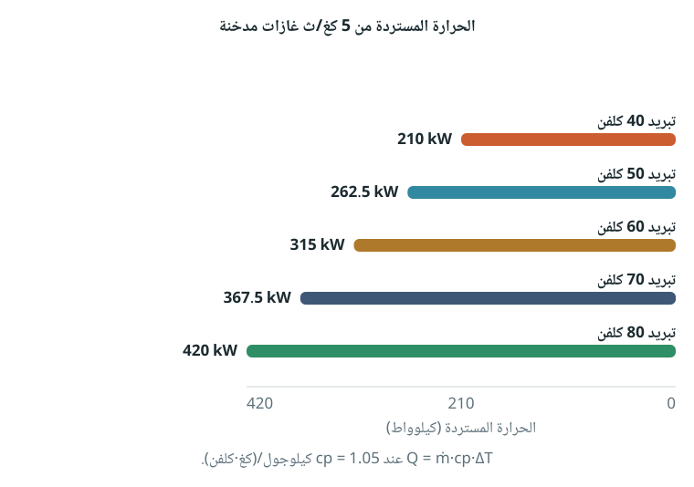

المقتصد: حرارة تخرج من المدخنة يمكن أن تسخّن المياه
Economizer: recovering heat from the stack
5 كيلوغرام في الثانية من غازات مدخنة 200 مئوية تحمل طاقة تُطرح للسماء. تبريدها إلى 130 مئوية يسترد نحو 368 كيلوواط، أي قرابة 1.8% من وقود غلّاية 20 ميجاواط — بلا وقود إضافي.
الغلّاية تنقل جزءًا من حرارة الوقود إلى البخار، والباقي يخرج مع الغازات. كل درجة تُنزل من حرارة الغاز الخارج تُسترد في مبادل حراري يسخّن ماء التغذية قبل دخوله. المقتصد ليس جهازًا يولّد طاقة، بل يُعيد جزءًا من الحرارة التي دفع ثمن وقودها بالفعل.
الآلية
كيف يحدث الأمر على مستوى الجسيمات أو المتغيّرات المباشرة
الغاز الساخن يمرّ على أنابيب ماء التغذية، فينتقل الحرارة بالحمل من الغاز إلى الجدار ثم بالتوصيل عبره ثم بالحمل إلى الماء. الفرق الحراري بين الغاز والماء هو القوة الدافعة، ولهذا يقلّ العائد كلما اقتربت حرارة الغاز من حرارة الماء. عند حرارة نقطة التكاثف يبدأ التكاثف الحمضي، وهي الحدّ الذي لا يُنزل تحته في وقود يحتوي كبريتًا.
الأرقام والوحدات
العلاقات والوحدات والنطاقات العددية التي تسند الشرح
Q = ṁ·cp·ΔT. عند 5 كغ/ث وcp = 1.05 كيلوجول/(كغ·كلفن): تبريد 50 كلفن يعطي 262.5 كيلوواط، و60 يعطي 315، و70 يعطي 367.5، و80 يعطي 420. غلّاية 20 ميجاواط حرارية تحتاج 20,000 كيلوواط، فاسترداد 367.5 يعني نحو 1.8% من الوقود في الظروف المصمّمة.
الفرق الدقيق
المفهوم الملتبس الذي يُخلَط به، وأين ينفصلان
المقتصد مختلف عن السخّان الهوائي: الأول يعيد الحرارة إلى دورة الماء، والثاني يسخّن وقودًا أو هواء احتراق. وإعادة الحرارة إلى الماء لا ترفع حرارة اللهب ولا تغيّر كفاءة الاحتراق نفسها، بل تقلّل الطاقة المهدورة في العادم.
حدود التعريف
أين ينكسر التعريف أو النموذج وما الذي لا يفسّره
الحساب يفترض cp ثابتًا وحرارة غاز ثابتة، وكلاهما غير صحيح عند تشغيل متغيّر. ويُهمل فقد الضغط الذي تضيفه أنابيب المقتصد (يُستهلك في مروحة العادم)، ويُهمل التكاثف. الحرارة المنزلية من المدخنة لا تلغي الحاجة إلى مدخنة آمنة.

| الكمية | القيمة | المصدر |
|---|---|---|
| الاسترداد عند تبريد الغاز 70 كلفن | 367.5 kW | [1] |
| نسبة الاسترداد من غلّاية 20 ميجاواط | 1.84 % | [2] |
| تدفق الغاز في المثال | 5 kg/s | [3] |
| حرارة الغاز الداخلة | 200 °C | [3] |
المصادر
- 1 OpenStax, College Physics 2e — The First Law of Thermodynamics — OpenStax. openstax.org/books/college-physics-2e/pages/15-1-the-first-law-of-thermodynamics · اطُّلع عليه 2026-11-16
- 2 NASA Glenn — Mass Flow Rate — NASA. www1.grc.nasa.gov/beginners-guide-to-aeronautics/mass-flow-rate/ · اطُّلع عليه 2026-11-16
- 3 NASA Glenn — Combustion Process — NASA. www1.grc.nasa.gov/beginners-guide-to-aeronautics/combustion-process/ · اطُّلع عليه 2026-11-16
راجعه: مراجعة آلية — ديوان المعرفة (أرقام محسوبة + مصادر متحققة) 2026-11-16 · 2026-11-16 · آخر تحديث 2026-11-16